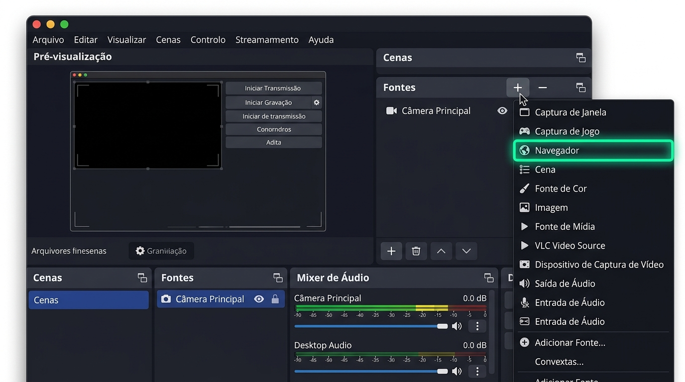
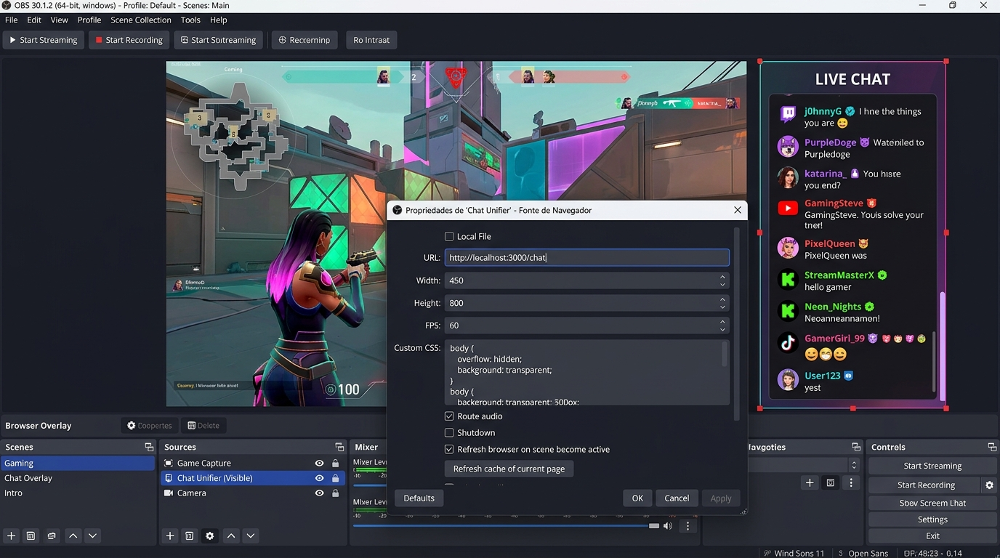
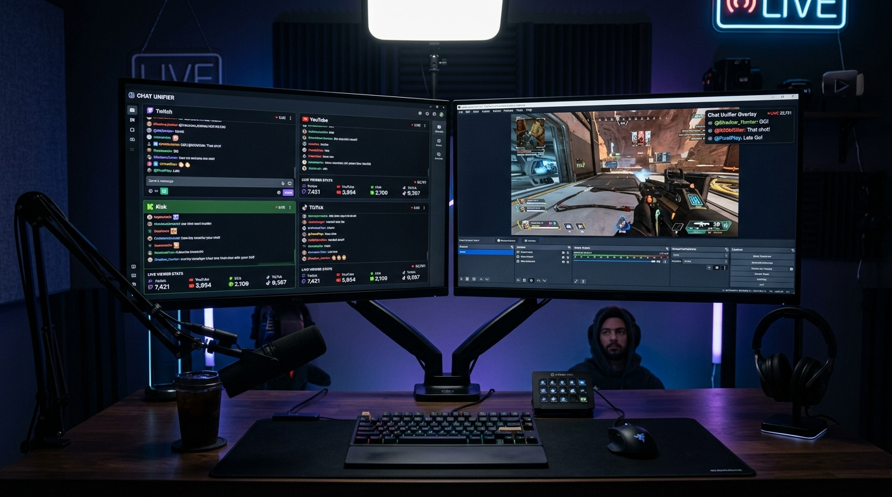
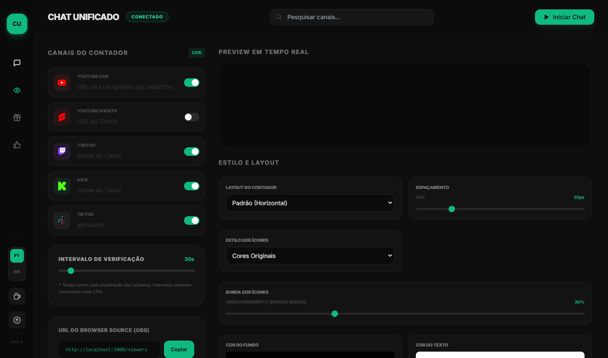
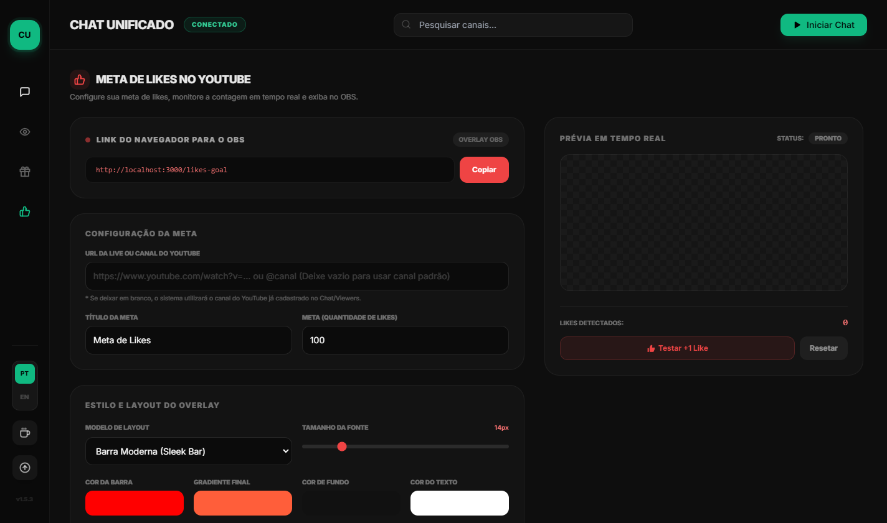
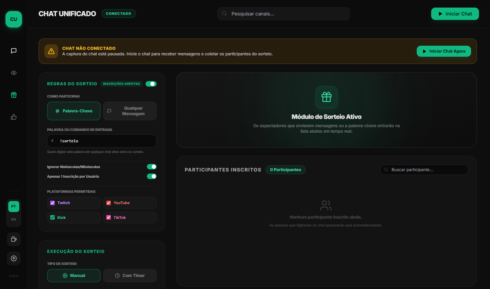
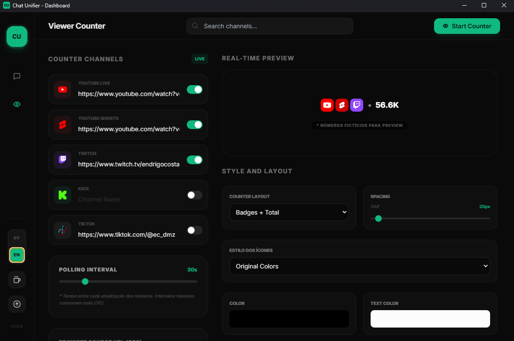

1. Download e Inicialização Portátil
O Chat Unifier Desktop é um aplicativo portátil (portable) para Windows 10 e Windows 11 de 64 bits. Você não precisa passar por instaladores lentos nem poluir o registro do sistema operacional.
Baixar a versão mais recente
Acesse a área de lançamentos oficiais no GitHub e baixe o arquivo executável Chat.Unifier.1.5.3.exe (~66 MB).
C:\StreamApps\ChatUnifier\) e salve o executável lá. Assim todas as suas configurações, temas e canais salvos permanecerão sempre organizados.
Por ser um software livre, open-source e independente, o Windows pode exibir uma tela avisando que é um aplicativo desconhecido. Para abrir, basta clicar em "Mais informações" e depois em "Executar assim mesmo". O código-fonte é 100% aberto e auditável no GitHub!
2. Conectando Suas Plataformas de Transmissão
O Chat Unifier utiliza captura local inteligente (local scraping) diretamente pelo seu PC. Isso significa que você NÃO precisa registrar bots, criar contas em sites terceiros, nem gerar chaves de API OAuth complicadas.
Digite somente o nome de usuário do seu canal na Twitch (sem o link e sem arroba).
gaules ou alanzoka
Cole a URL pública da sua Live do YouTube ou link do YouTube Shorts ao vivo. O app extrai o ID do chat instantaneamente.
@seucanal/live (ou apenas @seucanal) e o app conecta na sua live automaticamente!
•
@seucanal/live (Recomendado)•
https://youtube.com/@seucanal/live•
https://youtube.com/live/AbC123XyZ
Digite o username do seu canal no Kick exatamente como aparece na sua página oficial.
coringa ou xqc
Digite o usuário da conta do TikTok que está ao vivo no momento. A live precisa estar pública e ativa.
@streamer_oficial

3. Como Configurar no OBS Studio Passo a Passo
Integrar o Chat Unifier no OBS Studio (ou Streamlabs Desktop) é extremamente simples. Tudo é feito usando uma Fonte de Navegador (Browser Source) com aceleração de hardware integrada.
Adicionar a Fonte de Navegador no OBS Studio
Abra o OBS Studio na cena onde você deseja exibir o chat da sua transmissão. No painel inferior Fontes (Sources), clique no botão de adição + e escolha a opção Navegador (ou Browser se seu OBS estiver em inglês).

Nomear a Fonte e Configurar as Propriedades
Dê um nome intuitivo para a fonte, como Chat Unifier. Na janela modal que abrir, configure exatamente os seguintes valores recomendados:
| Campo no OBS | Valor Recomendado | Por que usar este valor? |
|---|---|---|
| URL | http://localhost:3000/chat |
Endereço local ultra-rápido gerado pelo Chat Unifier no seu PC. |
| Largura (Width) | 450 px |
Largura perfeita para mensagens e badges sem cobrir o jogo. |
| Altura (Height) | 800 px |
Altura ideal para empilhar mensagens recentes de forma limpa. |
| FPS | 60 |
Garante animações de entrada fluidas a 60 quadros por segundo. |
| Custom CSS | Padrão do OBS | O Chat Unifier já possui transparência nativa configurada. |
| Atualizar ao ativar cena | Marcado [X] | Recarrega o chat automaticamente ao alternar entre cenas. |

http://localhost:3000/chat, Largura 450, Altura 800 e 60 FPS com chat ao vivo sobre o gameplay.
Visão Real da Stream
Posicionar e Travar na Tela da Transmissão
Clique em OK. O chat transparente agora estará visível no seu canvas do OBS. Você pode:
- Mover para onde quiser: Arraste o retângulo vermelho para o canto esquerdo ou direito da sua tela.
- Cortar se necessário: Segure a tecla ALT e arraste as bordas para fazer corte milimétrico caso queira um chat mais estreito.
- Travar a camada: Clique no ícone de Cadeado 🔒 ao lado do nome da fonte na lista de Fontes para evitar mover acidentalmente durante a live.
4. Monitor de Chat em Tela Cheia (Segunda Tela)
Uma grande dor dos streamers é tentar ler o chat que está pequeno na tela de transmissão ou ter que ficar alternando entre abas do navegador. O Chat Unifier resolve isso com o Monitor Independente.
O aplicativo disponibiliza uma rota exclusiva otimizada com fontes grandes, alto contraste e fundo escuro que não ofusca a visão durante sessões longas de gameplay noturno:

Você pode abrir o monitor do chat em um tablet ou celular colocado ao lado do seu teclado! Basta substituir
localhost pelo IP local do seu computador na rede (ex: http://192.168.1.100:3000/monitor).
5. Contador e Monitor de Espectadores Multistream
Saiba exatamente quantas pessoas estão assistindo você em todas as plataformas somadas. Chega de somar de cabeça quantos estão na Twitch, no Kick e no YouTube!

Crie uma Fonte de Navegador com URL
http://localhost:3000/viewers, Largura: 480px e Altura: 110px. Fica perfeito no topo ou rodapé da sua cena!
6. Meta de Likes (YouTube) com Alerta Sonoro
Incentive sua audiência a deixar o like na sua transmissão do YouTube exibindo uma barra de progresso animada e emitindo um efeito sonoro festivo a cada novo like recebido!
- 6 Sons Disponíveis: Escolha entre 6 efeitos sonoros modernos e teste o volume no próprio botão de prévia antes da live começar.
- 3 Modelos de Layout: Barra horizontal clássica, Card flutuante ou Cápsula compacta.
- Meta Dinâmica: Defina o texto da meta (ex: "Meta de 500 Likes!") e a quantidade alvo. O valor atualiza em tempo real.

7. Módulo de Sorteios com Roleta Animada e Confetes
Realize sorteios justos e emocionantes entre todas as plataformas conectadas simultaneamente. Espectadores de Twitch, YouTube, Kick e TikTok participam na mesma urna!
Assim que a roleta para, o modal de vitória começa a monitorar o chat ao vivo. Quando o ganhador digitar qualquer coisa para comprovar que está online (ex: "to aqui!!"), o Chat Unifier detecta na hora e exibe o comentário e horário exato. Caso ele não responda dentro do tempo, basta clicar em Reroll para sortear outro participante!

8. Temas Visuais, Animações e CSS Customizado
Personalize a aparência do chat para que combine com o design do seu canal, seja um estilo minimalista e limpo ou cyberpunk neon vibrante.

9. Tabela de URLs do Sistema & Parâmetros do OBS
Guarde esta seção nos seus favoritos! Abaixo estão todas as URLs locais que o Chat Unifier disponibiliza para uso no OBS Studio, Streamlabs, navegadores ou monitores secundários.
10. Perguntas Frequentes & Resolução de Problemas
Respostas práticas para as situações mais comuns ao transmitir com o Chat Unifier.
1. Certifique-se de que o aplicativo Chat Unifier Desktop está aberto no seu computador e que você clicou no botão "Iniciar Chat".
2. Verifique se digitou a URL corretamente: http://localhost:3000/chat.
3. No OBS, dê um clique duplo na fonte de navegador e clique no botão "Atualizar cache da página atual" (Refresh cache of current page).
Certifique-se de que a live no YouTube já foi iniciada e está marcada como Pública ou Não Listada (lives Privadas não permitem captura externa). Copie o link completo direto da barra de endereço do navegador ou simplesmente digite @seucanal/live no Chat Unifier.
Não! O Chat Unifier foi arquitetado com Node.js leve e aceleração nativa. O consumo em segundo plano fica em torno de menos de 1% a 2% de CPU e cerca de 70 MB a 100 MB de RAM, sem nenhum impacto perceptível nos seus FPS ao jogar games pesados.
Sim! Qualquer programa de streaming que possua suporte a Fontes de Navegador (Browser Source) ou URLs web é 100% compatível com o Chat Unifier Desktop.
No próprio aplicativo, você pode clicar no botão "Verificar Atualizações" na barra lateral esquerda. Ou basta baixar o novo executável em Releases no GitHub e substituir o arquivo antigo. Suas configurações e canais continuarão salvos intactos.
Tudo Pronto para Começar?
Baixe gratuitamente a versão mais recente e transforme a interação do seu chat agora mesmo.